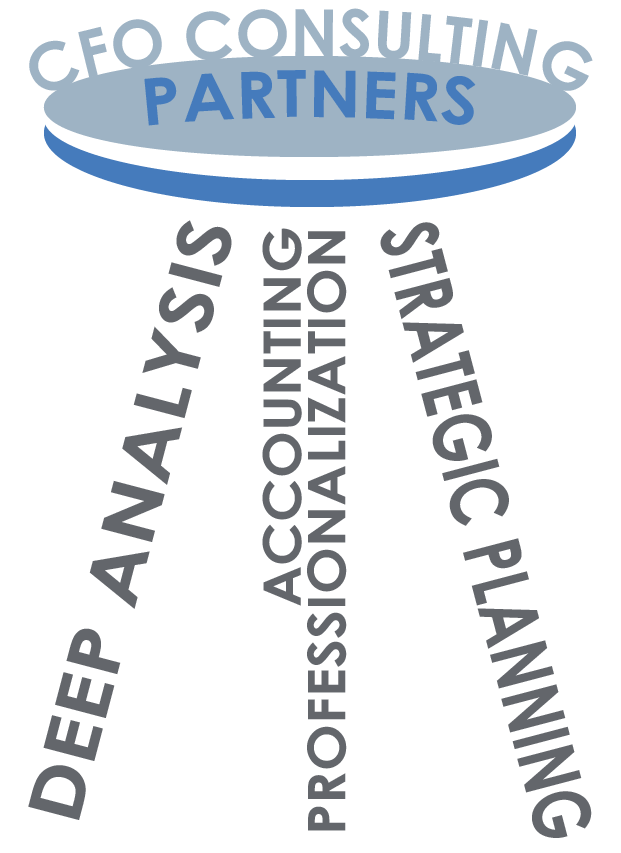
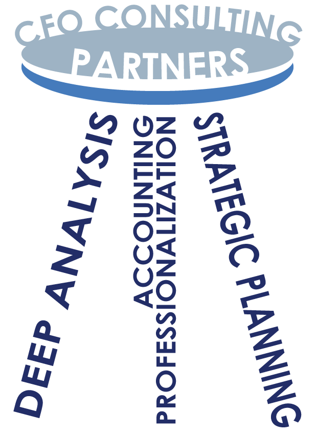

An abstract service needed a quick explanation.
CFO Consulting Partners needed a client-facing way to show how fractional CFO support helps a business move its work forward.
Marketing graphic / B2B communication
Turning fractional CFO services into a simple visual story for prospective clients.

CFO Consulting Partners needed a client-facing way to show how fractional CFO support helps a business move its work forward.
The graphic needed to build clarity and trust without asking prospective clients to read a long service description.
I created multiple compositions, adjusted the hierarchy, and simplified the pathway until the relationship between support and progress became more immediate.
The final concept uses project growth and a stable three-leg structure to show how professionalization, strategy, and turnaround support company success.
I can translate an intangible professional service into clear, audience-aware communication that supports a real client conversation.

